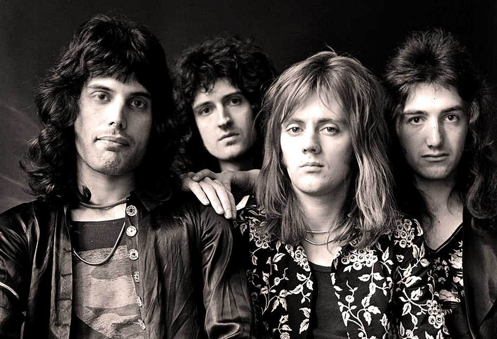

Os caminhos dos membros do Queen começaram a se cruzar no final dos anos 1960. Brian May, um talentoso guitarrista, e Roger Taylor, um baterista habilidoso, já tocavam juntos na banda Smile. A formação da Smile incluía também o vocalista Tim Staffell. No entanto, após a saída de Staffell, a banda ficou sem um vocalista e passou por um período de incerteza. Foi nesse contexto que Freddie Mercury, então conhecido como Farrokh Bulsara, entrou em cena. Freddie era um grande fã da Smile e amigo próximo de Tim Staffell. Com sua personalidade carismática e habilidades vocais excepcionais, Freddie viu uma oportunidade de se juntar a Brian e Roger. Ele sugeriu não apenas sua inclusão na banda, mas também a mudança de nome para Queen, um nome que ele acreditava ser grandioso e universal.
O auge do Queen é frequentemente associado à segunda metade da década de 1970 e ao início dos anos 1980, quando a banda britânica dominou as paradas de sucesso e se consolidou como uma das maiores do rock mundial.
Freddie Mercury faleceu em 24 de novembro de 1991, devido a complicações relacionadas à AIDS. A perda de Mercury foi devastadora para a banda e seus fãs. Freddie era a alma criativa e carismática do Queen, conhecido por sua poderosa voz, presença de palco incomparável e talento musical. Pouco antes de sua morte, Mercury havia revelado publicamente que estava lutando contra a doença, o que levou a um aumento da conscientização sobre o HIV/AIDS. Seu falecimento marcou o fim de uma era para o Queen, já que muitos acreditavam que a banda não poderia continuar sem ele.